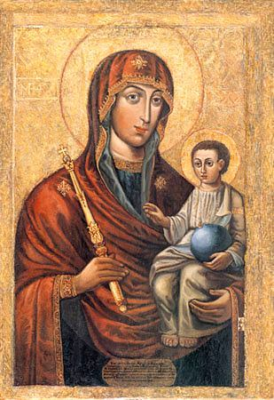
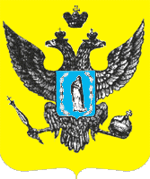
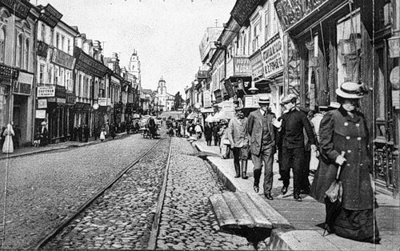
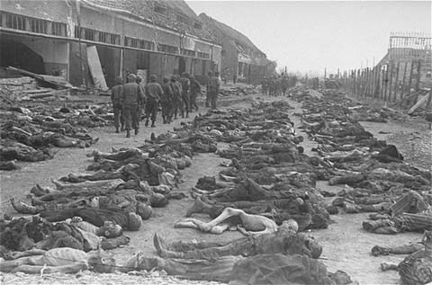
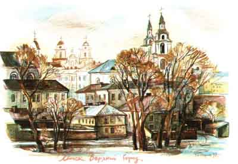

Minsk is one of the most beautiful cities of Europe, bright and colorful one, with numerous architecture monuments well known all over the world, friendly and welcoming city! The fabulous festivals and other great international events are waiting for you here as well as open-heart people who are ready to make everything for hospitality… Of course, that’s not true. That seems like worthless text from the worthless tourist booklet. But in other hand… is this place totally unremarkable? Did really anything important, bright and exciting happen here for more than thousand years of its existence? A problem is that nobody was interesting in Minsk’s history for almost the whole century (soviet period), except some enthusiasts, a small group of local historians. When Minsk became the capital of the Belarusian independent state, it just needed more in-depth studies of the archives…
Yes, Minsk is approx. 1000 years old. The settlement with such a title (“Miensk” is a more correct form) appeared at the bank of the little river Miena for 15 km. far from the center of the modern city. The old ramparts that served for defense survived till present days. As you’ve guessed, the title “Miensk” originated from the name of the Miena river which means “the little river” in some old Baltic dialect. But the city was set up by Slavs who had pushed away Balts to the northern lands. Therefore the title sounds as Slavonic one. But why the city moved so far from its original location ? Nobody could give a certain answer. But we could suppose that it was ruined and there was no chance to rebuild it, so another settlement with the old title was built in other place (the region of modern Niamiha street)… That happened in 1067, early spring. At that moment Miensk was a small fortress defending the southern borders of Polatsk duchy built by Usiaslau Czaradziej (Usiaslau the Wizard), the duke of Polatsk. The forces of Kyiv (modern Ukraine) came to Miensk and ruined it murdering all the men to revenge the Polatsk’s duke for his unruliness. This is the first mention about our city, so dramatic and iconic one.

Yes, in 20 years Miensk was rebuilt, one could hear merchant’s shouting, potter’s noise, sounds of smith’s impacts again. To be ruined and then to arise – Minsk was demonstrating such a skill many times, after WW II especially… When medieval Belarus and Lithuania had united in one commonwealth (Great Duchy of Lithuania), Miensk became one of the biggest city of the country. It was attacked by Russians and Tartars many times but survived all the time and tempered in the battles.
In 16th cent. Miensk received the Magdeburg privilege (a right for self-governing of the German kind), the city hall was built here, the nobles from all over the country were meeting here regularly for the Main court’s sessions . Since then the shape of the Virgin Mary surrounded with the angels became Miensk’s coat of arm (emblem). It was related to a miracle which happened in 1499 at Svislacz river, near the Miensk’s fortress (region of the modern Niamiha street). An icon of the Virgin Mary appeared there shining. Since then the citizens consider her as city’s defender. Nowadays one could see the icon in the orthodox Saint-Spirit cathedral.

The next centuries weren’t so happy for the city because foreign politicians and forces came there changing the way of life according to their point of view, changing the title of the city into more comfortable one for their tongue. Since then Minsk (it changed the name in 18th cent. In the polish manner) became a kind of a province that was copying the trends from Warsaw, then Moscow and St-Petersburg…

The city hall was ruined to provide the Russian army with an empty square for parades… But Minskers didn’t want to give up. The first Belarusian opera directed by Vincent Dunin-Marcinkievicz and Stanislau Maniuszka were shown in Minsk in 1852. Then railways crossed the city. A number of plants and factories started to work here, the population were rising rapidly. Minsk was lucky to have Karal count Czapski as a city’s governor at the end of the 19th cent. He made a lot for this place giving it a chance to become a capital soon.

At the Russian revolution times Minsk was a hot point with many socialist demonstrations punished cruelly by Russian tsar’s regime.
Then the front-line of WW I came close to Minsk. The flag at the top of city’s administration changed many times for a short period as well as names of the main streets. At the time of Germans’ occupation in 1918 there was an attempt to proclaim the independency of Belarus (so called Belarusian people’s republic). At that moment Minsk became the capital first time in its history. Then Belarusian soviet republic was found with Minsk as a main city. But in fact Moscow, not Minsk, was controlling all the life of the republic.
Particularly we should say about WW II times. Minsk was occupied by Nazis for 3 years. They organized one of the biggest Jewish ghetto where almost a hundred thousand people were tortured and murdered. A number of people was forced to work in Germany as servants. The cultural and art heritage items disappeared as well. After the liberation Minsk was close to the apocalyptic ruins. It was honored with the reward of “city-hero” like some other soviet cities for its heroical underground struggle against Nazis.

The pieces of the old city were not preserved after war. Wide new avenues and streets cut the old center in some parts. That is why nowadays one can’t imagine the old Minsk, which is hidden behind the modern giants and there is no chance to come back to the old shape… After the WW II Minsk was covered with an armour of stalin’s empire, majestic and grandiose style. It looked like an insensible decoration for an angry play where the citizens would totally lose their memory at the final. Today foreign tourists could be surprised with such an absence of old buildings. But Minsk still remembers its past because of hundred memorials, museums, stories, historical signs of all the ages, testimonies, versions of its history which are combating with each other for the streets’ name, for the place at the buildings’ frontals.

At the beginning of 21st cent Minsk’s city hall was reconstructed and that was a good sign. All the old temples and convicts ruined at the soviet period were renovated and revived. The colors, charm and coziness appeared in Minsk. The 21-st century is going on and all the time there is something to balance in Minsk: art-galleries and heartless palaces, cozy yards and business skyscrapers, calm old parks and giant parking zones… At this moment somewhere at the backstreets new kind of Minsk is being created by the artists, writers, designers. Bright and colorful one. Grey everydayness becomes just a stuff to deal with, to create from. We hope you to see Minsk so: different, unsugared, contradictory, developing city, therefore interesting and exciting one. Yes, you will need to try to discover it. But are you a traveler? So you will manage, come in!
Raman Abramchuk __
Additional services: walking and car tours around Minsk and Belarus. Don't stop! Discover a new country!